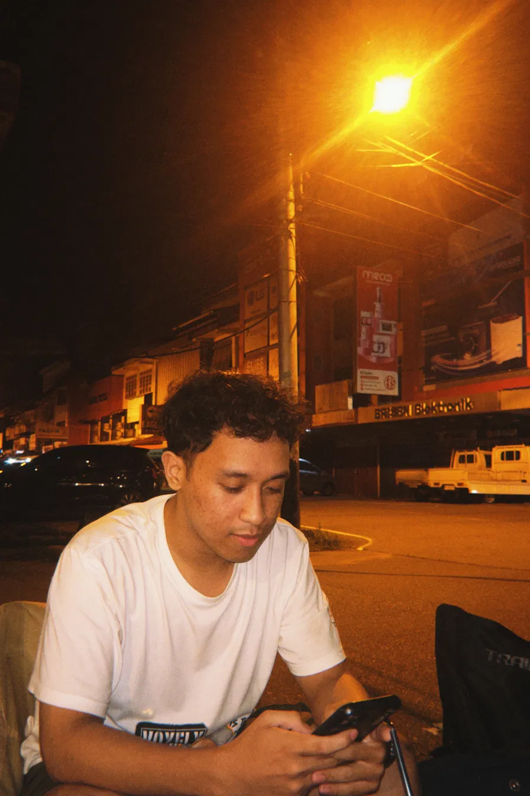

Selamat datang di blog saya!
Hari ini saya beranafas menggunakan oksigen, sangat menyenangkan bukan, kalian kalau masih bisa bernafas, alhamdulillah!
di hidup ini kita harus ada prinsip, seperti jangan takut gagal, karena setiap kita ingin cahaya, harus ada kegelapan dulu, kita ingin sukses harus ada kegagalan dulu, kita harus memiliki mindset kalau gagal yaudah berati belum sempurna(kalau kata Allah belum rejeki). Kalau ingin sukses, hindari gagal. Kalau ingin sehat jangan sakit.
Dibuat oleh Muhammad Rasya Abdussalam